Plugin Version: 2.0.40 | Release Notes | Old Versions
Plugin Version: 2.0.40 | Release Notes | Old Versions
Introduction
ProcessMaker’s Advanced Dashboards give organizations the ability to monitor large amounts of data about their processes. Whether it’s measuring the productivity of departments by process, or identifying bottlenecks in processes, the advanced dashboards provide both simple information at a glance and detailed information in a drill-down feature. It allows regular users to check the state of the processes, cases, tasks, users and tables in interactive statistics and graphics in 4 user-friendly dashlets.
These four dashlets are intuitive and easy to use. Its interactivity offers users an easy way to access information about a process, such as the number of cases, their status, etc.
Requirements
Advanced Dashboard Plugin v 2.0.9
- ProcessMaker v2.0.45 or higher (stable version + available hotfix)
- Enterprise Plugin v2.0.17 (stable version + available hotfix)
Advanced Dashboard Plugin v 2.0.40
- ProcessMaker v2.5.0 or higher (stable version + available hotfix)
- Enterprise Plugin v2.0.17 or higher (stable version + available hotfix)
Browser Compatibility
- Mozilla Firefox v. 31
- Google Chrome v.36
- Internet Explorer v. 8.0, v.9.0 and v.10
Installation and Configuration
Login as a user, such as "admin", who has the PM_SETUP and PM_SETUPADVANCED permissions in his/her role. Then, go to Admin > Plugins > Enterprise Plugin Manager and import and install the Enterprise Edition plugin. After the installation, go to the the list of plugins which are available in the Enterprise Edition, select Advance Dashboards, and then click on Enable:

Once the plugin has been enabled, a check button will appear on the right side of the menu, indicating the plugin has been installed.
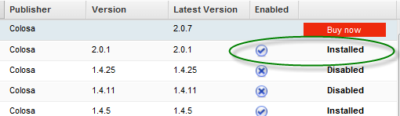
Warning: If the plugin is disabled and later reenabled in ProcessMaker 2.0.40 and earlier, all changes made in the saved dashboards will lost.
Managing Dashboards
Login to ProcessMaker with a user such as "admin" who has the PM_SETUP and PM_SETUP_ADVANCE permissions in his/her role. Then go to ADMIN > Settings > Dashboards.
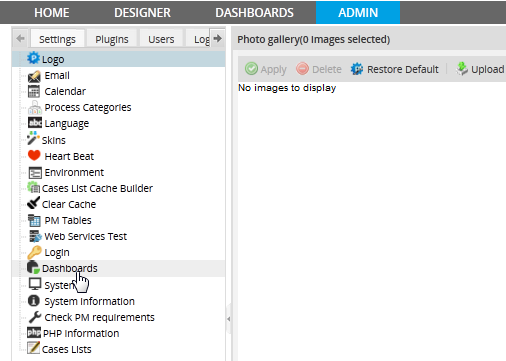
A list will be displayed of all the dashlet instances which have been created:
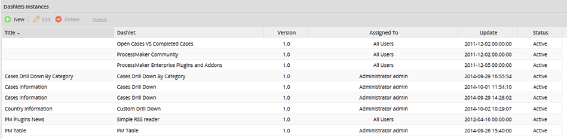
The following buttons are used to manage the dashlets:
- New: Create a new dashlet instance.
- Edit: Edit a dashlet, which was previously created.
- Delete: Delete a Dashlet.
- Status: Show the status of a dashlet. By default it will be disabled. To change the status of a dashlet, select one in the list and click on Deactivate to disable the dashlet or Activate to enable it.

Information about the dashlet instances is listed in the following columns:
- Title: A title for the dashlet instance, which is displayed to users. Note that the first three dashlets do not have titles, because they are default dashlets which come with ProcessMaker. They can be edited to add titles.
- Dashlet: The name of the dashlet.
- Version: The dashlet version.
- Assigned To: User or users assigned to view the dashlet.
- Update: Date when the dashlet was last updated.
- Status: Displays the status of a dashlet, whether it is Active or Inactive.
Creating and configuring a Dashlet
To create a dashlet, click on New and fill in the following form to configure the dashlet:

The fields in the form will vary, depending on the type of dashlet. Listed below are the fields which are found in every type of dashlet:
General
- Title: Available Version: 2.0.9. Give the dashlet instance a name. Long dashboard titles will be wrapped to multiple lines.
- Dashlet: Select the dashlet to be used:
- Case Drill Down: Displays graphs which can be drilled down (i.e., clicked to display details in another graph) according to a sequence, such as Process > Task > User > Status, until a list of cases is displayed.
- Case Drill Down By Category: Displays a graph which shows a single category (processes, users, groups, departments or overdue vs on schedule). Clicking on that category shows a further graph, which can be clicked to open a list of cases.
- Custom Drill Down: Displays a sequence of drill-down graphs based on custom database queries.
- Open Cases VS Completed Cases: Displays a color dial pointing to what percentage of cases which are due in a specified time period have been completed. The percent of the dial which is colored green, orange and red can be configured to give users a visual clue whether they are working well (green), should improve to a small degree (orange) or need to improve to a larger degree (red).
- PM Table: Displays the content of a single PM Table.
- ProcessMaker Community: Displays links for the ProcessMaker web page, blog, wiki, forum, etc.
- ProcessMaker Enterprise Plugins and Addons: Displays a list of Enterprise plugins and addons with links to obtain more information.
- Simple RSS Reader: Displays the news from an RSS feed.
- Assign to: Select the class of users who will be able to view the dashlet:
- User: A single user may view the dashlet.
- Group: A single group may view the dashlet.
- Department: A single department may view the dashlet.
- All: All users may view the dashlet.
- Note: If multiple users/groups/departments need to view a dashlet, create multiple instances of the dashlet.
- Name: If User, Group or Department was selected in the previous field, then select which one of the users/groups/departments from the current workspace will have access to view the dashlet:

Other
- Chart Type: Available Version: 2.0.9. Choose the type of chart which is displayed in the dashlet. Chart types don't apply to the PM Table dashlet.
- Bar: Displays data in vertical bars with lengths proportional to the values that they represent.
- Pie: Displays data in a circular chart divided into sectors. Each sector is proportional to the percentage it represents.
- Funnel: Displays data in an inverted triangle divided into rhomboidal sections, whose area represents the quantity. The largest quantity is on top and the smallest on bottom.
- The three chart types (Bar, Pie and Funnel):
- 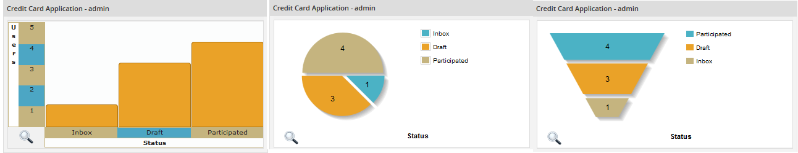
For pie and funnel charts:
- Label: A label which appears under the chart.
For bar charts:
- Label for Axis X: A label which appears under the X axis of the bar chart. It is recommended to use a label such as "Processes" or "Users" which indicates the category of the first graph in the sequence.
- Label for Axis Y: Vertical label for the Y axis of the bar chart, which shows the number of cases. It is recommended to use a short label such as "Cases" or "# of cases".
Then, fill in the custom fields for the PM Table, Cases Drill Down, Cases Drill Down By Category or Custom Drill Down dashlet. Finally, click on Save to create the new dashlet instance or Cancel to discard it.
PM Table
PM Table dashlets display data extracted from a PM Table or Report Table in read-only mode.
Creating a PM Table dashlet
To create a PM Table dashlet, go to ADMIN > Settings > Dashboards and click on the New button above the Dashlet Instances list. In the form which opens, select the PM Table option in the Dashlet dropdown box:
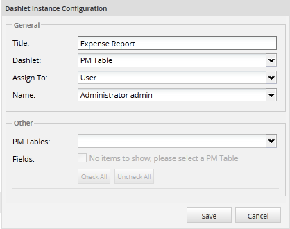
General
This section is described in general configuration of the Advance Dashboards plugin.
Other
- Pm Table: Select the PM Table or Report Table whose data will be displayed by the dashlet.
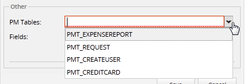
- Fields: When a table is selected, its fields will be listed.
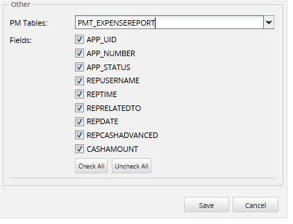
Mark the fields which will be displayed in the dashlet. Use the following buttons to select fields:
- Check All Click this option if all the PM Table fields will be included in the dashlet. Available Version: 2.0.40
- Uncheck All Click this option to deselect all of the fields in the PM Table. Available Version: 2.0.40.
When done defining the PM Table dashlet, click on Save to create the new dashlet or click on Cancel to discard any changes.
Using PM Table Dashlets
When a case is run, the case data entered in DynaForms are saved in in the fields in Report Tables and should be immediately available to be viewed in PM Table dashlets which display those Report Tables. Likewise, any new data entered in PM Tables is immediately available to be viewed in dashlets which display those PM Tables.
To view the data, login as a user who is assigned to view the PM Table dashlet and has the PM_DASHBOARDS permission in his/her role. Then, go to the DASHBOARDS menu.
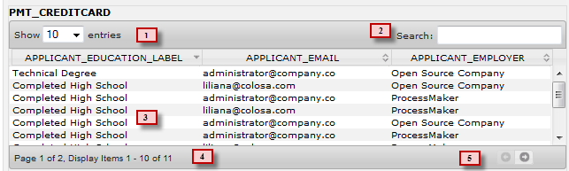
1. Show Entries: Select the number of records to show per page.

2. Search: Enter text to find all the rows in the table which contain that text. The search is case insensitive and can search in the middle of fields, including in numeric fields. Note that it is not possible to search with wildcards.

3. Sorting: To sort the records in the table, click on the header of a column and the data will be sorted by the values in that column. To sort in descending order, click on the down arrow in the column header:
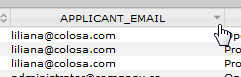
To sort the data in ascending order, click on the up arrow in the column header:
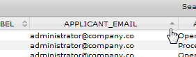
4. Page Numbering and Pagination: If the dashlet has multiple pages of date, the page numbers will list the available number of pages. Available Version: 2.0.40.
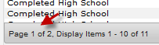
5. Pagination: By default PM Tables dashlets only list ten records at a time. Use the pagination controls to navigate the pages of data.
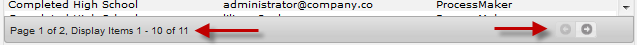
Cases Drill Down
This dashlet shows a sequence of graphs about the number of cases in different categories. For each category, more information can be obtained by drilling down, i.e., clicking on a subcategory to open the next graph in the sequence. which can be drilled down about cases depending on their status, task, users and process.
Creating a Cases Drill Down Dashlet
To create a Cases Drill Down dashlet, go to the ADMIN > Settings > Dashboards . Then click on the New button located above the list of Dashlet Instances. When defining the new dashlet, select the Cases Drill Down option in the Dashlet dropdown box:
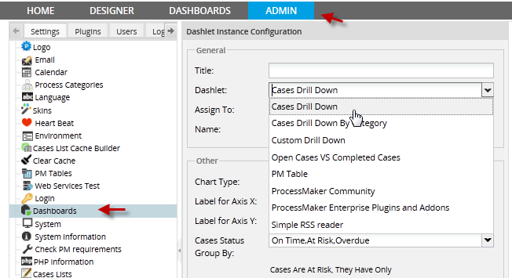
Then fill in the following options:
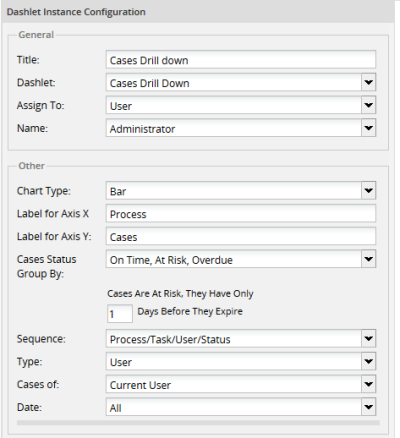
Fill in the general fields, which are described in Creating and configuring a Dashlet. Then fill in the following fields for a Cases Drill Down dashlet:
- Cases Status Group By: Available Version: 2.0.9. Select which group of statuses is used when grouping cases according to their status:
- On Time, At Risk, Overdue: This option groups cases found in the Inbox, according to their due date. Note that it only includes cases with TO_DO status, so cases with DRAFT, PAUSED, CANCELLED, DELETED and COMPLETED status are not included.
- On Time: Displays cases in the Inbox which are on time, meaning they haven't surpassed their due date for the current task.
- At Risk: Displays cases in the Inbox which are close to being overdue, meaning that they are close to the due date for the current task. The number of at-risk days before the due date can be configured below.
- Overdue: Displays cases in the Inbox which are currently overdue, meaning they have surpassed the due date for the current task.
- On Time, At Risk, Overdue: This option groups cases found in the Inbox, according to their due date. Note that it only includes cases with TO_DO status, so cases with DRAFT, PAUSED, CANCELLED, DELETED and COMPLETED status are not included.
- If this option is selected, it is possible to set the number of days before the due date when a case is considered to be at risk:
- 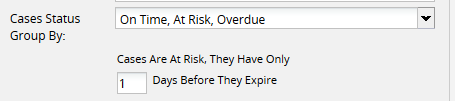
- Inbox, Draft, Participated, Unassigned, Paused: This option groups cases according to the following statuses:
- Inbox: Displays cases which are in the Inbox, meaning that the current task in the case has been assigned to a user, but that user hasn't started working on the task yet.
- Draft: Displays cases which have Draft status, meaning that the user who is currently assigned to work on the case has started to work on the current task, but hasn't yet completed it.
- Participated: Displays cases, in which the current logged-in user has participated, no matter their current status.
- Unassigned: Displays cases which are not assigned to any user, because these cases have self service and need to be claimed by users.
- Paused: Displays paused cases.
- Inbox, Draft, Participated, Unassigned, Paused: This option groups cases according to the following statuses:
- Sequence: The series of graphs which are drilled down (i.e., clicked on to open a more detailed graph), before getting to a list of individual cases:
- Process/Task/User/Status: The first graph to be shown is the processes. Clicking on a process displays its tasks. Clicking on a task displays all the users who are assigned to cases in that task. Finally, clicking on a user displays the status of the cases assigned to that user.
- Process/Status: The first graph to be shown is the processes. Clicking on a process displays that statuses of the cases in that process.
- Status/Process/Task: The first graph to be shown is the statuses of the cases. Clicking on a status displays the different processes whose cases have that status. Clicking on a process displays the tasks in that process.
- Status/Process: The first graph to be shown is the statuses of the cases. Clicking on a status displays the different processes whose cases have that status.
- Type: Select to whom the cases are currently assigned.
- User: Only display cases currently assigned to a specified user.
- Group: Only display cases currently assigned to members of a specified group.
- Department: Only display cases currently assigned to members of a specified department.
- Everybody: Display all cases, no matter to whom the case is currently assigned.
- 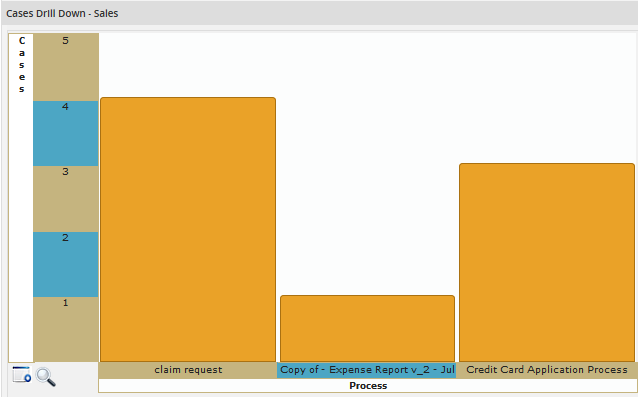User
 Department
Department
- 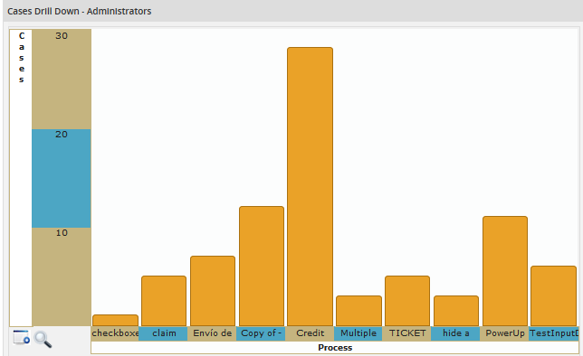Group
 Everybody
Everybody
After saving the new dashlet, go to the DASHBOARDS tab to check the appearance of the new dashlet.
Using Case Drill Down Dashlets
A Cases Drill Down dashlet may be viewed by users who are assigned to view the dashlet and have the PM_DASHBOARD permission in their roles.
The following dashlet is created by the above configuration:

- Open in a new Window: Provides a larger view of the chart by opening it in a separate window or tab (depending on the configuration of the web browser). Available Version: 2.0.40
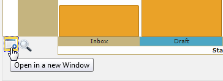
- Opening in a new tab:
- 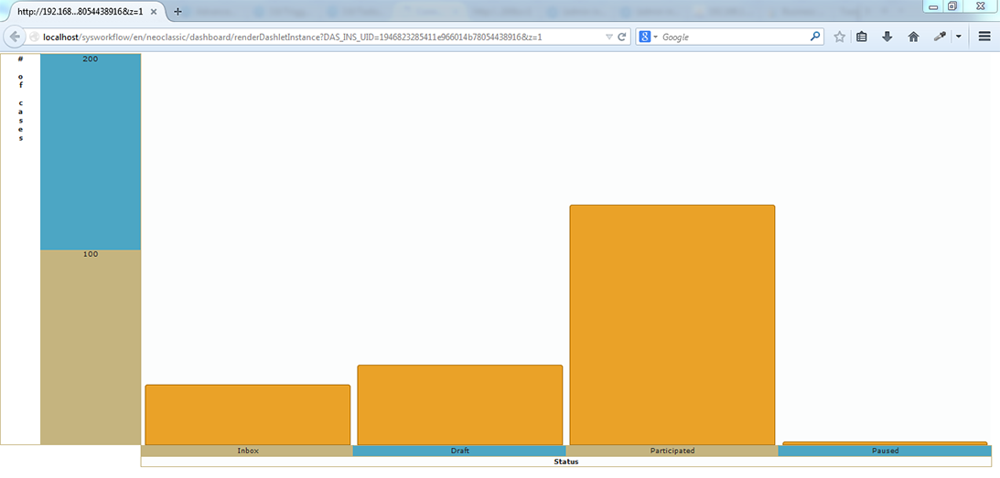
- Zoom: Click the magnifying glass icon to magnify the chart and get a better view of the information in every chart.

- The chart will open in a pop-up window.

- Click the X button to close the pop-up window.
- Dashlet Title: On the left side of the dashlet, its name is displayed, followed by the name, type or group of users whose information is being shown.
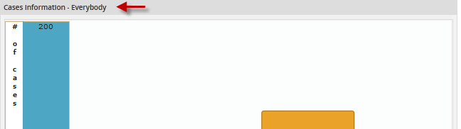
- Popup Information: To view the number of cases in each section of the graph, pass the mouse over the section to view a popup message showing the name of the section and the number of corresponding cases.
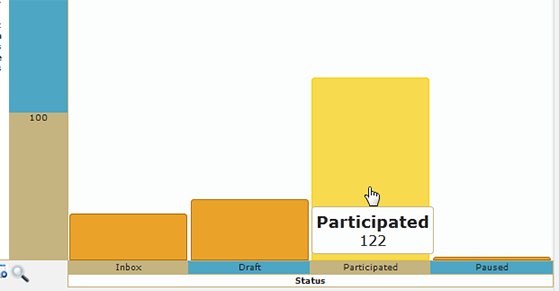
- Drill down to the next graph: Access the information by starting with the main category (Depending on the sequence defined) and move through the hierarchy until reaching the last level.
- For example, in the sequence Status/Process/Task, clicking in Draft status shows the number of cases for each process. Then clicking on the Claim request process, shows the number of tasks which has cases in draft status:

Country | 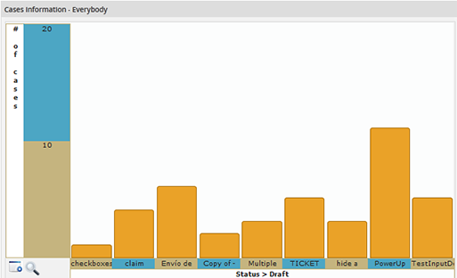Name of the State | 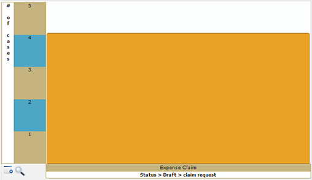Name of the Region |
|---|
- The label below the graph, lists the custom label entered in the configuration, followed by the names for each graph in the sequence. To navigate to the first graph in the sequence, click on the beginning of the label:

- Click on a section in the last graph in the sequence will open a list of cases which correspond to that section:

The case list displays the following information:
- #(Number): The case number.
- Status: The status of the case.
- Case:.- The case title. If a custom case title isn't set in the task properties, then this is "#", followed by the case number.
- Process: The name of the process.
- Task: The name of the task.
- Sent by: The user who worked on the previous task, before it was routed to the current task.
- Current User: The current user assigned to the case.
- Due Date The date-time when the current task is scheduled to be completed.
- Return to the chart: Click to return to the last graph which was displayed.
- Page Numbering: If the list has multiple pages, then the available number of pages will be displayed. Navigate through the pages using First, Next, Last and Previous options. Available Version: 2.0.40.

- Pagination Lists only ten cases per page.
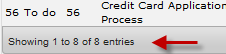
Cases Drill Down By Category
This dashlet shows information about cases depending on the category, which can be: Process, Users, Groups, Departments and cases which are Overdue vs. On Scheduled.
Creating the dashlet
To create a Cases Drill Down By Category dashlet, go to ADMIN > Settings > Dashboards and click on the New button above the list of Dashlet Instances. In the form to define the dashlet, select Cases Drill Down By Category option in the Dashlet dropdown box.
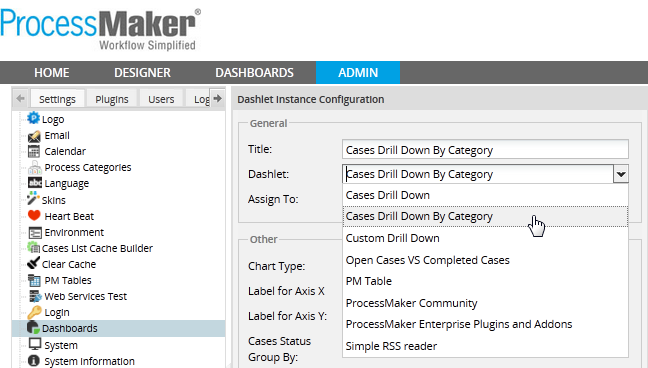
Then fill in the following fields for a Cases Drill Down By Category dashlet:
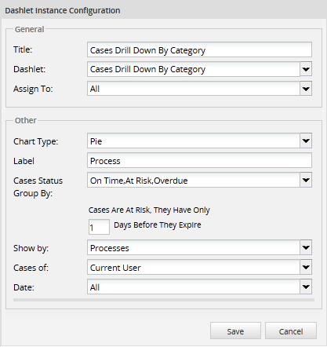
- Cases Status Group By: Available Version: 2.0.9. Select which group of statuses is used when grouping cases according to their status:
- On Time, At Risk, Overdue: This option groups cases found in the Inbox, according to their due date. Note that it only includes cases with TO_DO status, so cases with DRAFT, PAUSED, CANCELLED, DELETED and COMPLETED status are not included.
- On Time: Displays cases in the Inbox which are on time, meaning they haven't surpassed their due date for the current task.
- At Risk: Displays cases in the Inbox which are close to being overdue, meaning that they are close to the due date for the current task. The number of at-risk days before the due date can be configured below.
- Overdue: Displays cases in the Inbox which are currently overdue, meaning they have surpassed the due date for the current task.
- On Time, At Risk, Overdue: This option groups cases found in the Inbox, according to their due date. Note that it only includes cases with TO_DO status, so cases with DRAFT, PAUSED, CANCELLED, DELETED and COMPLETED status are not included.
- If this option is selected, it is possible to set the number of days before the due date when a case is considered to be at risk:

- Inbox, Draft, Participated, Unassigned, Paused: This option groups cases according to the following statuses:
- Inbox: Displays cases which are in the Inbox, meaning that the current task in the case has been assigned to a user, but that user hasn't started working on the task yet.
- Draft: Displays cases which have Draft status, meaning that the user who is currently assigned to work on the case has started to work on the current task, but hasn't yet completed it.
- Participated: Displays cases, in which the current logged-in user has participated, no matter their current status.
- Unassigned: Displays cases which are not assigned to any user, because these cases have self service and need to be claimed by users.
- Paused: Displays paused cases.
- Inbox, Draft, Participated, Unassigned, Paused: This option groups cases according to the following statuses:
- Show by: Choose which category is shown in the first graph:
- Processes: Show number of cases for the different processes in the current workspace.
- Users: Show number of cases currently assigned to each user.
- Groups: Show number of cases assigned to the members of each group.
- Department: Show number of cases currently assigned to the members of each department.
- Overdue vs. On Schedule: Show the number of cases which have passed their due date for the current task versus the number that have not yet passed their due date.
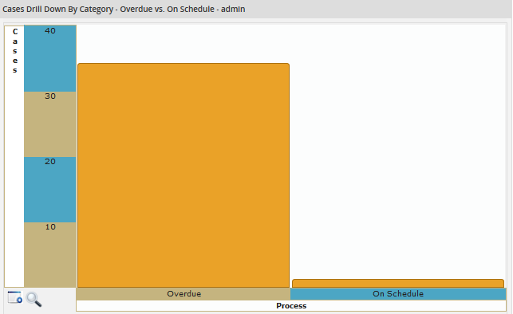Process |
|---|
- Cases Of: Select whether the cases are currently assigned to the Current User or All users (or who have participated in the case if viewing the Participated status).
- Date: Select the due date for the cases' current task. Possible values: Today, Yesterday, This Week, Previous Week, This Month, Previous Month, This Year, Previous Year, Custom. For this last option, define date ranges for the due date:
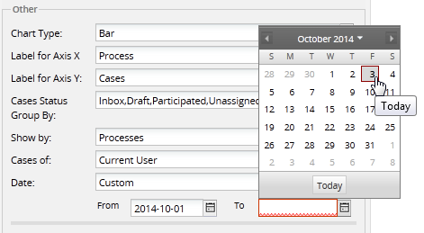
After creating the new dashlet, go to the DASHBOARDS menu and look for the new Cases Drill Down By Category dashlet.
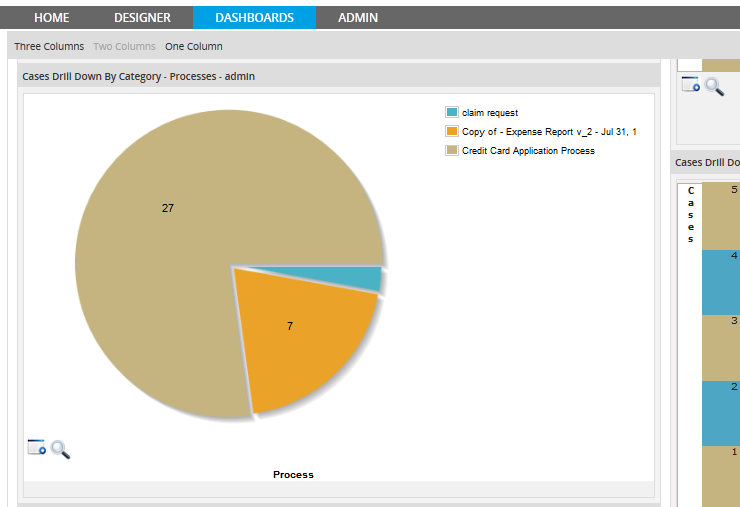
A Cases Drill Down By Category dashlet can be viewed in the same way as a Cases Drill Down dashlet.
Custom Drill Down
A Custom Drill Down dashlet is used to create a series of custom database queries, which are concatenated. This means that each query depends upon the results of the previous query. These queries can be based upon Report Tables (which hold case data), PM Tables (which are custom tables created in ProcessMaker) or data from an external database connection.
Creating a Custom Drill Down dashlet
To create a Custom Drill Down dashlet, go to the ADMIN > Settings > Dashboards and click on the New button above the Dashlet Instances list. In the form to define the new dashlet, select the Custom Drill Down option in the Dashlet dropdown box.
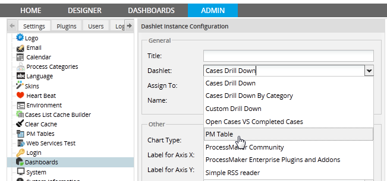
Fill in the general configuration fields and the following fields for a Custom Drill Down dashlet:

- Query: Enter a series of two or more SELECT statements which query the selected database and create a drill-down chart in the dashlet. The first query will generate the first chart, the second chart will generate the second chart, etc.
- If Using the last query to generate the list is set to Yes, then the last query will be used to display a table, where the names of the fields are the column headers. To display different column headers, use AS to rename the fields.
- The queries should be concatenated, so that the second query depends on what was returned by the first query, and the third query depends on the second, etc. For example, if the first query returns a field named CODE, then concatenate the second query to the first by using @@CODE or @%CODE in the WHERE clause of the second query. @@CODE will enclose the value in double quotes and should be used with values that are strings (including dates and datetimes). @%CODE will not enclose the value in quotes and should be used for numeric values.
- Each query must be separated by a semicolon (;) and the database name should not be included in the SELECT statements. The first field returned by the SELECT statement will be the labels displayed on the X axis of the chart. The second field will be the numeric value for the Y axis of the chart. The COUNT(*) function can be used to count the number of records returned by a query. Use GROUP BY if counting the number of occurrences found in a second table which is joined to a first table. Any fields after the second field returned by the SELECT statement will not be displayed on the chart, but they can be used as variables for concatenating with the next query.
- First Query: Retrieves the data for the first chart.
- Second Query: Retrieves the data for the second chart.
- Additional queries: These are optional queries, which get data for the third chart, fourth chart, etc. If Using the last query to generate the list is set to Yes, then the last query will be used to display a table of data.
- Using the last query to generate the list: Click on "yes" to use the last query to generate a list in the form of a table of data.
- DB Connection to use for this query: Available Version: 2.0.40. Select the database connection which will be used for the query. If querying a PM Table or a Report Table stored in the wf_
databse for the current workspace, then select - WORKFLOW -. If querying a Report Table stored in the rp_ of the current workspace, select - REPORT -. To query a database for another workspace or an external database, use a Database Connection to that database.

Additional Information to display on Top Available Version: 2.0.40.
- Label Information: Add a label to display additional information in the upper right-hand corner of the chart.
- Query: Enter an SQL SELECT statement to obtain additional information, which is displayed after the label.
For example, to display the total number of countries stored in the database, its label is "Total" and its query is:
The result will be:
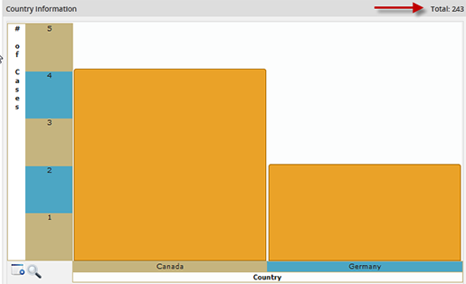
Once created, Custom Drill Down dashlets are accessed and viewed in the same way as a Cases Drill Down dashlet.
Example with Custom Table
Let's create an example to better understand Custom Drill Down dashlets and how to use them. This example will show the number of requests made by country. Then, if a country is selected, it will show the regions which belong to that country. When a region is selected, it will show how many requests have been made by type. This information will be displayed as a final report in the Custom Drill Down dashlet.
Follow the steps below:
1. To get information about countries and regions, it is required to work with the ISO_COUNTRY and ISO_SUBDIVISION tables stored in the wf_
2. Create a PM Table: To store information about users and their respective countries and regions create a table named PMT_REQUESTS with the following fields:
- REQ_UID: Request ID.
- REQ_FULLNAME: User full name
- REQ_EMAIL: User email.
- REQ_TYPE: Request information.
- REQ_COMMENT: Request Comments.
- REQ_DATE: Date of the Request
- IC_UID: Code of the country, where the user resides.
- IS_UID: Code of the region in the country, where the user resides.
Note: Information may be filled using a DynaForm, a trigger, manually, etc. depending the design of the process.
3. Fill in data in the PM Table. For example:
|
4. Create a Custom Drill Down dashlet with the following information:

5. Create the first query, whose result will be the label of the field. In this case, it will be the label of the country.
(PMT_REQUEST.IC_UID = ISO_COUNTRY.IC_UID) GROUP BY PMT_REQUEST.IC_UID ORDER BY ISO_COUNTRY.IC_NAME;
6. Create the Second query, whose result will be the quantity (number of records), which are displayed for each bar in the graph:
(PMT_REQUEST.IS_UID = ISO_SUBDIVISION.IS_UID) WHERE ISO_SUBDIVISION.IC_UID=@@IC_UID GROUP BY PMT_REQUEST.IS_UID ORDER BY ISO_SUBDIVISION.IS_NAME;
7. Create the Third query, whose result will be the regions for the respective countries selected.
GROUP BY PMT_REQUEST.REQ_TYPE ORDER BY PMT_REQUEST.REQ_TYPE;
8. Create Fourth query which result will be the fullname, email and date of the user request. It's worth mentioning that this information is optional since this result will be displayed as a list after the last graph in the sequence.
9. Select Yes to use the last query to generate the list.
Once this query is created click on Save to create the new Custom Drill Down dashlet. Then, go to DASHBOARD and look for the Number of Requests dashlet:

As shown in the image above, the X axis of the graph lists the 3 countries (Australia, Canada and Germany) where requests were made. The Y axis shows the number of requests made for each country. To obtain more detailed information, click on a country, such as Australia. In this example, 3 regions inside Australia will be displayed where requests were made:
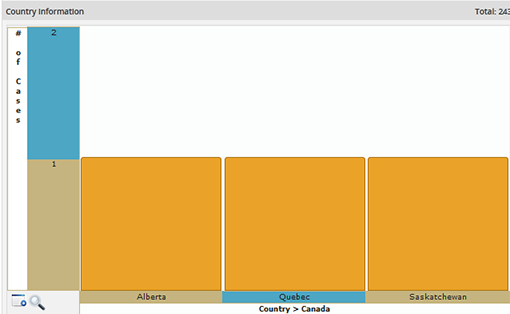
It is possible to see the total for each bar in a graph, by hovering the mouse over it so a popup window will appear with the total. For example, hovering the mouse over Alberta shows that it had 1 request:
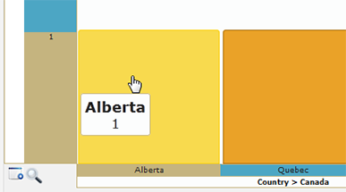
Finally, a detailed list can be obtained by clicking on a bar in the last graph. In this case, to see the list of requests from Alberta, click on the bar for Alberta:

Example with Groups and Cases List
This example explains how to create a Custom Drill Down dashlet which queries the workflow database for information about groups and the cases assigned to members of groups. The first chart shows the groups and the number of members in each group. Clicking on specific group then shows the names of the users in the group and the number of active cases assigned to each member. Clicking on a user's name, then opens a list of cases assigned to that user. Clicking on the case's number will open the case in a new window/tab (depending on the configuration of the web browser).
First, go to ADMIN > Setup > Dashboards and create a new Custom Drill Down dashlet:

The first query looks up the names of the groups, which are defined in the CONTENT table where the CON_CATEGORY field is set to 'GRP_TITLE'. It uses the COUNT(*) function and the GROUP BY GRP_UID clause so it can count the number of members in each group.
FROM CONTENT C, GROUP_USER GU
WHERE GU.GRP_UID=C.CON_ID AND C.CON_CATEGORY='GRP_TITLE'
GROUP BY GU.GRP_UID ORDER BY GROUP_NAME;
The second query looks up the number of cases assigned to each member of the group selected by the drill down. An inner SELECT statement is used to lookup the IDs of the members of a group in the GROUP_USERS table. The @@GROUP_ID is passed as a variable from the first query to be used in the inner SELECT. For each group, the second query looks up the active cases assigned to the members of the group in the APP_CACHE_VIEW table. Only cases which are still open and have 'TO_DO' or 'DRAFT' status are selected. Information about cases is stored in a number of tables in the wf_
FROM APP_CACHE_VIEW ACV
WHERE DEL_THREAD_STATUS='OPEN' AND (APP_STATUS='TO_DO' OR APP_STATUS='DRAFT') AND
ACV.USR_UID IN (SELECT GU.USR_UID FROM GROUP_USER GU WHERE GU.GRP_UID=@@GROUP_ID)
GROUP BY USR_UID ORDER BY APP_CURRENT_USER;
The third query obtains a list of cases assigned to a particular user who was selected by the drill down. The first field returned by the query uses the concat() function to construct a link CASE-URL>CASE-NUMBER to open the case. The other fields show the Process name, the current task name, when the case was started, when it was last updated, when the current task is due and the status of the case, which can be TO_DO or DRAFT.
APP_UID, '&DEL_INDEX=', DEL_INDEX, IF(@@USER_LOGGED=USR_UID, '&action=draft', '&action=view'), ' target=_blank>', APP_TITLE, '</a>')
AS Case_Link, APP_PRO_TITLE AS Process, APP_TAS_TITLE AS Task, APP_CREATE_DATE AS Created, APP_UPDATE_DATE AS Last_Update,
DEL_TASK_DUE_DATE AS Due_Date, APP_STATUS AS STATUS
FROM APP_CACHE_VIEW
WHERE USR_UID=@@USR_UID AND DEL_THREAD_STATUS='OPEN' AND (APP_STATUS='TO_DO' OR APP_STATUS='DRAFT')
ORDER BY Due_Date;
Note that the link has target=_blank so that it will open cases in a new tab/window if clicked. To open in the same window, use target=_top. If the current logged-in user is assigned to the case, then the case is opened for editing, otherwise it is opened for viewing. If the user doesn't have rights to open the case, only the case summary is shown.
Once saved, the new dashlet can be viewed under the DASHBOARDS menu, where the first chart shows the number of members in each group
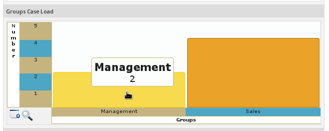
Clicking on the Management group, shows the number of cases assigned to the two members of the group:
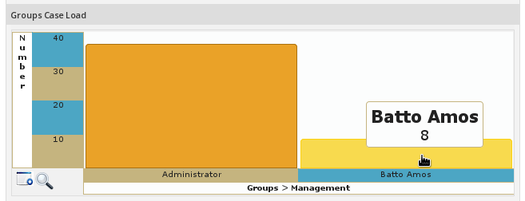
Clicking on a particular user, shows a list of cases assigned to that user:

Clicking on the case number will open that case in a new tab/window.


{kind=link}
{kind=link}
{kind=link}
{kind=link}
{kind=link}